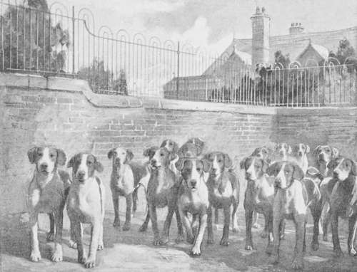
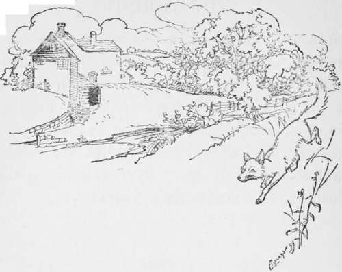

The Hound. Part 7
Description
This section is from the book "Hunting: A Manual of Fox, Hare, Stag & Otter Hunting", by J. Otho Paget. Also available from Amazon: Hunting: A Manual of Fox, Hare, Stag & Otter Hunting.
The Hound. Part 7
I am sorry to notice that many packs have now very little music, and I consider this a great fault. It must eventually tend to breed mute hounds, and a hound that runs mute is a rogue who will spoil you many a good run. There are people I know who say that a silent pack will get nearer to their fox, and this on the face of it seems possible ; but we must remember that nine out of ten good runs are down wind, and the galloping of horses can be heard for fully a mile down wind. If you allow your fox to get more than a mile ahead, you will not be very likely to catch him however silently the pack may run. Hounds that have plenty of tongue will always run better together and carry a better head than those that are almost silent. When a pack has plenty of music, you will very seldom see four or five couple getting away by themselves, which is one of the most annoying things that can happen. Your run is certain to be spoilt, for when you do find the truants, you will have no means of ascertaining where they checked, and if you allow the rest of the pack to hunt after them, you will be encouraging a habit of running dog, which at some critical moment may lose you your fox. Of course we do not want to go to the other extreme, and have a lot of noisy brutes that throw their tongues without a scent. The mute hound, if he is a leader of the pack, will soon have many disciples. Muteness creates jealousy, and prevents a pack from working together for the common good. If you are going to allow one hound to hunt a fox by himself, you had better leave the remainder at home, but I should prefer to leave the one in the kennel or hang him, however good a nose he might have. When the others know that there is a hound who is fast, and who may at any moment go off with the scent without letting them know, they will be continually looking about with their heads in the air, instead of hunting as they should ; whereas if they have confidence in each other, they will all be busy until the moment when a comrade's note brings them flying to his side. You will generally find that a pack that is short of tongue straggle and run in a string. A hound's eyesight is only moderate, but his hearing is very keen. How then is a hound to know if the silent leader is an unreliable youngster flashing over the line or one to be depended on ? Many huntsmen claim they know the note of every member of the pack, but this I doubt, though I am quite certain that every hound can recognise a comrade's voice at a great distance, and yet not be able to distinguish one from the other by sight fifty yards away. When the pace is extra good you cannot expect to have a full-tongued chorus, but, however fast they run, I like to hear a faint note or squeak from each hound in the pack, the combined voices blending in a rhythmical, harmonious murmur.
The Cottesmore Bitches, 1899
There may be many packs that have lots of music and yet have plenty of drive, but the one with which I have had the good fortune to hunt, that combines these essential qualities, is the Cottesmore bitch pack. Gillson, the huntsman, deserves the very greatest credit for having not only brought his hounds to near perfection in the field, but also for having made them a smart, level lot on the flags. A look at their pedigrees will show that most of the blood hails from Belvoir, but other huntsmen have had the same opportunities of acquiring that blood, and yet I know no other pack that has improved as much in such a short time. The good material was there to work on, but the man moulded and blended it, until he achieved a result that is now the admiration of the hunting world. Another man with the same material might have produced a pack that pleased the eye as much and only performed indifferently in the field, but the combination of both virtues could only be attained by the science and judgment of a master of the art. The Cottesmore are to me an ideal pack in their work, and are as near perfection as it is possible to get anything.
The hound is a very fascinating subject, and those who have had anything to do with him are never tired of talking or writing about him. I think I have already exceeded the space which should have been allotted to the hound, and still there are many points not yet touched on. Never keep hounds that are too old to run up with the pack, for though they may be useful perhaps on some very bad scenting day, they will more often do harm rather than good. After the sixth season it is about time to draft them, and though in some instances they may run up a little longer, they are very seldom of any use beyond that period. The strength of a pack lies in its new members, and unless a good entry is introduced every year, it will soon commence to go downhill. I do not mean to say that a hound in its first season is as good as a third or fourth season hunter, but the young one is getting better every day, whilst the old one will soon have passed its prime. Most huntsmen prefer that for the first season a hound should not be too prominent or try to take a leading part, as the precocious ones very frequently wear themselves out before their muscles are properly developed.
The best site for building kennels is either on the slope or the top of a hill, and if possible they should be on a clay soil. A tree or two in the grass-yard are an advantage for purposes of shade, but the main building must be open to the sun, and for this reason a south-east aspect is to be preferred. In summer-time, in the heat of the day, the hounds should not be allowed to lie out in the yards, but should be shut in the lodging-rooms, which when properly ventilated will always be cool. If, however, the pack are walked out often, as I have already suggested, they will be content to lie quiet when in kennel. It is not always possible to choose a clay foundation, and in that case beneath the floor of the lodging-rooms the ground must be excavated, and two feet of good stiff clay rammed in. Then on top of this must come a layer of concrete, and over that a floor of blue brick, carefully cemented at the joints. By observing these precautions you will not be troubled with that dreadful scourge—kennel-lameness, which is in reality only rheumatism. The popular fallacy about a clay soil being damp is, I think, exploded now. Clay certainly retains moisture, but at the same time it prevents damp from rising. There has been no brick or cement yet invented that is not in a certain degree porous. What happens when you build your kennels on a gravel or sandy soil is this. The heat from the hounds' bodies draws the moisture up from below, and it does not matter if the water is sixty feet down, unless there is a bed of clay above it, the damp is sure to rise in response to the warmth which attracts it.
There is no cure for kennel-lameness except turning the invalid out to run loose, and then, of course, in removing the causes that have brought on the disease. In proof of the soundness of my argument, you will find that where a kennel is suffering severely, if the lodging-room is made cooler by extra ventilation and fewer hounds allowed in one place, the disease will abate considerably. By thus lowering the temperature, less moisture is drawn up.

Continue to: